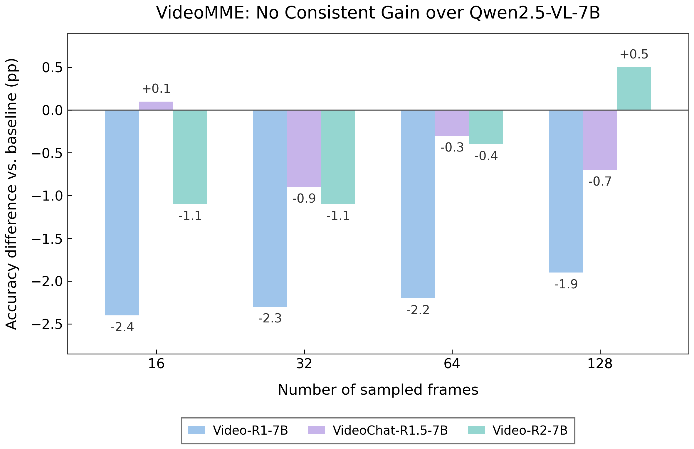
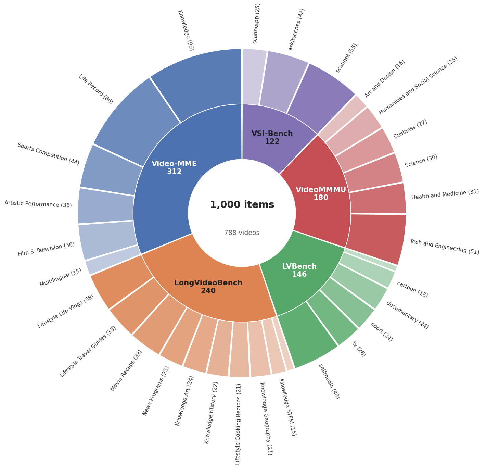
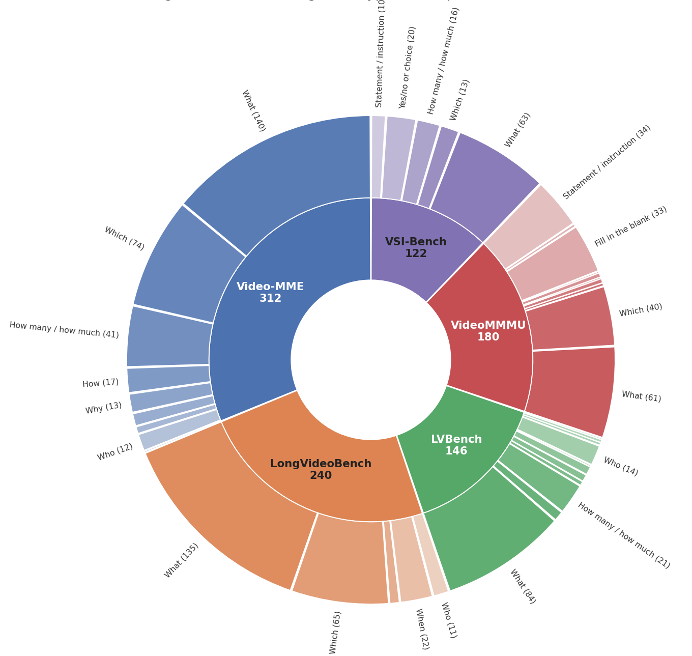
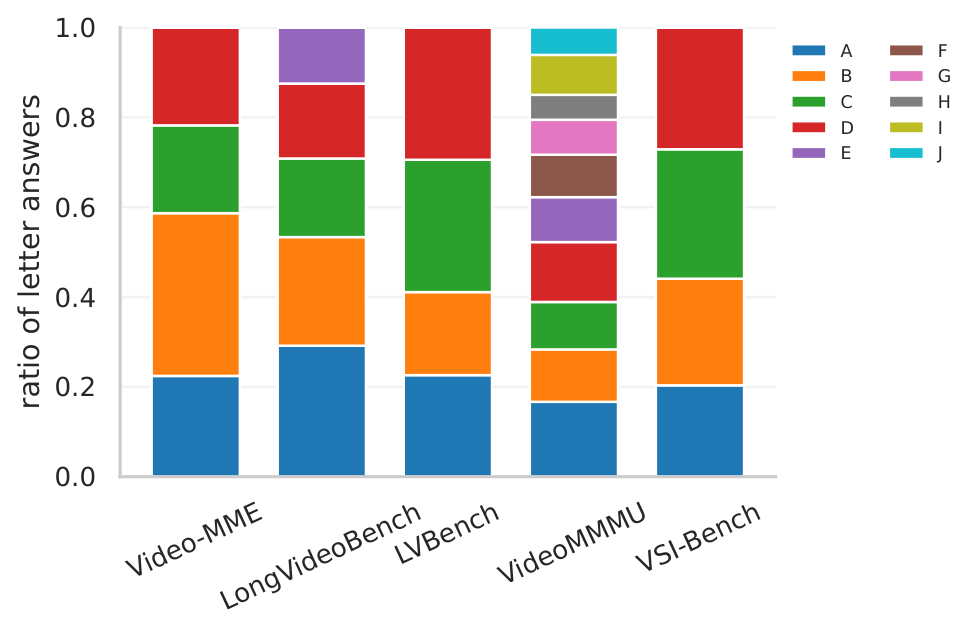
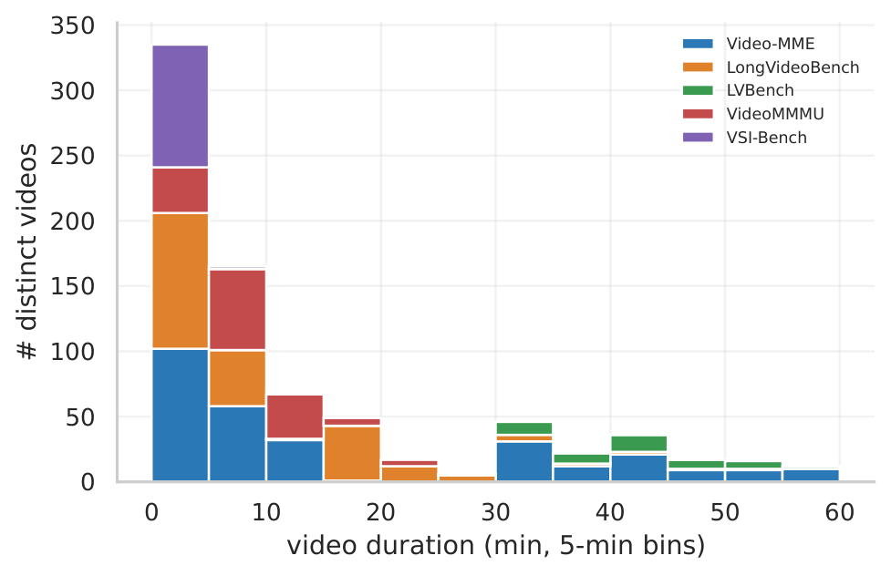
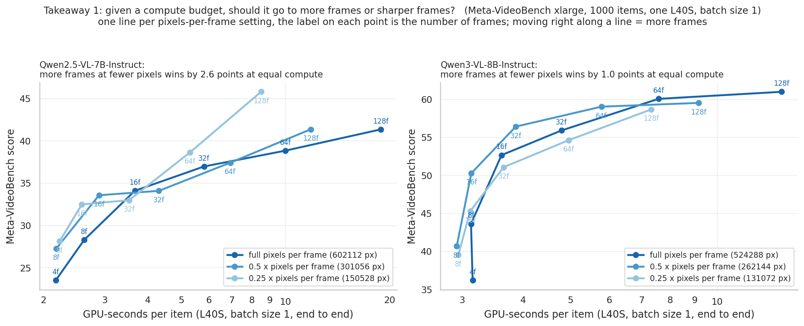
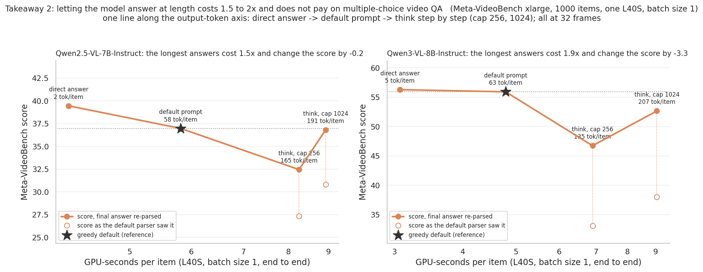
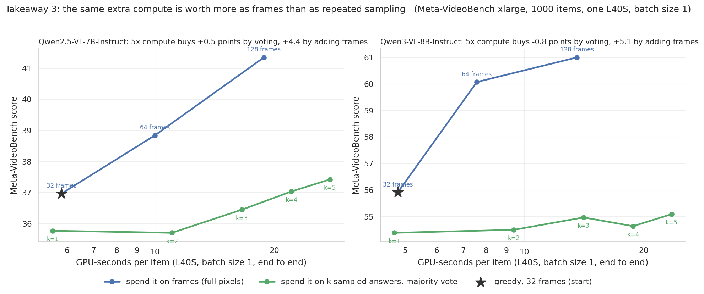

Video understanding benchmarks are the primary yardstick for measuring progress in video-language modeling, and a growing body of work relies on them to claim improvements. The reported benchmark scores in these works, however, are almost always produced by frameworks (e.g., lmms_eval) used as black boxes: certain evaluation choices like frame sampling, preprocessing, and input formatting are inherited from preset defaults and seldom inspected carefully.
We show these unexamined choices are a major source of variance. Even for the same model checkpoint, evaluation configuration alone can shift accuracy by up to 19.5pp.
Hence, it is unclear whether reported gains reflect genuine improvements in capability or differences in evaluation setup. Moreover, many benchmark samples offer little evidence of visual capability, since they can be answered without the video, and the full suites are expensive to evaluate.
We address these issues in two parts. First, we curate existing suites for discriminability and efficiency, producing Meta-Video, a balanced 1,000-question benchmark over 791 videos spanning diverse tasks and durations, which preserves model rankings, at 5× inference speedup.
Second, we establish a standardized evaluation protocol by sweeping the configuration space to isolate choices that measurably affect results, distill them into best practices and reporting standards, and release reproducible reference scores across five models and seven benchmarks.
We hope that the proposed evaluation framework and the Meta-Video benchmark will support video understanding research by providing a reproducible and efficient foundation to measure progress in a reliable way.
Recent papers report scores for the same Qwen2.5-VL-7B and Qwen3-VL-8B checkpoints that differ by far more than the 2–5pp gains those papers claim over the base model. The range of reported baseline scores per benchmark (Max Δ) across more than twenty recent video reasoning papers:
| Base model | Video-MME | TempCompass | MVBench | LongVideoBench | LVBench | VideoMMMU | MMVU | VSI-Bench |
|---|---|---|---|---|---|---|---|---|
| Qwen2.5-VL-7B, Max Δ | 19.5 | 5.0 | 10.6 | 8.8 | 11.1 | 6.8 | 17.7 | 8.6 |
| Qwen3-VL-8B, Max Δ | 8.1 | – | 1.1 | 13.5 | 19.3 | 3.5 | – | – |
Several methods report gains over the Qwen2.5-VL-7B baseline that fall below our reproduction of the same baseline. When we re-evaluate three RL-based video reasoning models under identical settings, none of them improves consistently over the base model across frame counts:

Accuracy difference of Video-R1, VideoChat-R1.5 and Video-R2 to their Qwen2.5-VL-7B base model on Video-MME, under one fixed protocol, at 16 to 128 frames.
A reliable evaluation that supports fast model development therefore needs (1) a clean set of benchmark samples, (2) low evaluation cost while preserving rankings, and (3) a standardized evaluation protocol. Meta-Video addresses (1) and (2); the protocol and evaluation cards address (3).
We fix a reference configuration (bold in the figure at the top) and vary one factor at a time on Qwen2.5-VL-7B over Video-MME, TempCompass, MVBench, LongVideoBench and Meta-Video. What we found:
.jpg frames beat .mp4 input at low frame counts (+5.0pp on TempCompass at 4 frames) but flatten or reverse at high ones: at 128 frames on MVBench, image input scores 60.6% vs. 68.0% for video input and takes 2,329 instead of 1,095 minutes. Video input goes through spatiotemporal pooling, which halves the visual-token count.Inspired by dataset cards, every table in the paper comes with an evaluation card that records the full configuration behind its numbers: backend, batch size, number of frames, sampling strategy, decoder, max pixels, input modality, prompt and temperature. We recommend reporting these alongside any new video benchmark result.
Evaluating video models across multiple benchmarks and configurations is expensive, and questions that models answer without visual input inflate scores and obscure differences between models. Meta-Video is a compact benchmark of 1,000 question-answer pairs over 791 videos, selected from the evaluation sets of Video-MME, LongVideoBench, LVBench, VideoMMMU and VSI-Bench.
Construction. To filter questions answerable without visual input, we replace all frames with black frames and evaluate Qwen2.5-VL-7B-Instruct, Qwen3-VL-8B-Instruct and InternVL3.5-8B. Every question that all three models answer correctly is discarded. We then sample question-answer pairs from the remaining questions in each source benchmark, balanced across sources, video durations and question categories.
Question types. 937 questions are multiple-choice and 63 require a numerical free-form answer. 564 questions have four options, 185 five, and 170 more than five (157 with exactly ten). Correct answers are evenly spread across options: random guessing scores 20.3 and always picking the most frequent option scores 23.3.
Video duration. Videos run up to one hour: 335 short (<5 min), 281 medium (5–20 min) and 175 long (20–60 min). Benchmarks described as "long video" differ widely: videos average 41.1 min in the Video-MME long split, 7.9 min in LongVideoBench and 67.3 min in LVBench.

Source benchmarks and their categories.

Question types within each source benchmark.

Distribution of correct answer letters per benchmark.

Video duration distribution on Meta-Video.
Scores on Meta-Video are lower than on the source benchmarks by construction, since the questions that language priors solve are gone. Compare models by rank and by Meta-Video score, not against published numbers.
Five models at 4 to 128 frames on six source benchmarks and on Meta-Video, under one fixed protocol (uniform sampling, HF backend, torchcodec, 602k max pixels, .mp4 input, batch size 1, temperature 0; one tile per frame for InternVL3.5). Avg. is the mean over the seven source benchmarks. The grey rows reproduce the numbers reported in each model's paper. Bold marks the best frame budget per model and column.
| Model | #Frames | Video-MME | LongVideoBench | TempCompass | MMVU (val) | LVBench | MLVU | VSI-Bench | Avg. | Meta-V short | Meta-V medium | Meta-V long | Meta-V |
|---|---|---|---|---|---|---|---|---|---|---|---|---|---|
| InternVL3.5-4B | 4 | 54.5 | 52.1 | 69.1 | 46.4 | 38.0 | 59.5 | 46.3 | 52.3 | 35.4 | 24.2 | 32.3 | 30.6 |
| 8 | 57.7 | 54.5 | 68.9 | 46.7 | 38.9 | 60.6 | 50.6 | 54.0 | 45.0 | 32.7 | 35.1 | 37.6 | |
| 16 | 60.7 | 56.8 | 71.1 | 48.6 | 41.7 | 63.4 | 55.1 | 56.8 | 50.4 | 36.2 | 37.9 | 41.5 | |
| 32 | 63.1 | 58.3 | 71.3 | 50.8 | 42.6 | 67.1 | 56.8 | 58.6 | 53.9 | 41.2 | 41.5 | 45.5 | |
| 64 | 64.8 | 59.1 | 69.8 | 49.9 | 43.1 | 67.7 | 57.3 | 58.8 | 52.7 | 41.1 | 40.1 | 44.6 | |
| 128 | 64.1 | 58.8 | 68.9 | 49.3 | 44.7 | 68.4 | 54.7 | 58.4 | 48.1 | 41.4 | 42.2 | 43.9 | |
| reported | 65.4 | 60.8 | – | – | – | 70.4 | – | – | – | – | – | – | |
| Qwen3-VL-4B | 4 | 49.0 | 51.5 | 67.8 | 48.5 | 32.5 | 52.7 | 39.1 | 48.7 | 33.0 | 21.4 | 31.4 | 28.6 |
| 8 | 52.9 | 54.4 | 69.4 | 51.8 | 35.4 | 55.0 | 46.2 | 52.2 | 42.5 | 30.5 | 36.1 | 36.4 | |
| 16 | 57.0 | 59.0 | 70.3 | 51.4 | 37.2 | 58.1 | 50.8 | 54.8 | 52.2 | 42.7 | 37.9 | 44.3 | |
| 32 | 61.4 | 60.2 | 70.9 | 52.7 | 40.9 | 62.5 | 54.6 | 57.6 | 58.6 | 49.6 | 41.8 | 50.0 | |
| 64 | 64.1 | 61.3 | 70.6 | 53.2 | 40.5 | 66.1 | 57.6 | 59.1 | 61.7 | 53.5 | 43.2 | 52.8 | |
| 128 | 67.5 | 64.0 | 69.9 | 53.4 | 43.8 | 70.4 | 58.9 | 61.1 | 67.3 | 57.1 | 41.4 | 55.3 | |
| reported | 69.3 | – | – | 50.5 | 56.2 | 75.3 | – | – | – | – | – | – | |
| Qwen2.5-VL-7B | 4 | 50.1 | 50.3 | 64.5 | 46.2 | 28.1 | 51.9 | 26.8 | 45.4 | 26.7 | 22.7 | 25.1 | 24.8 |
| 8 | 53.4 | 52.7 | 70.4 | 48.4 | 33.1 | 54.5 | 30.5 | 49.0 | 30.2 | 26.6 | 27.9 | 28.2 | |
| 16 | 58.1 | 56.2 | 71.8 | 50.8 | 34.7 | 56.3 | 33.5 | 51.6 | 35.1 | 36.0 | 29.0 | 33.4 | |
| 32 | 61.4 | 58.7 | 73.3 | 49.7 | 37.4 | 59.5 | 36.7 | 53.8 | 42.1 | 33.3 | 29.3 | 34.9 | |
| 64 | 63.5 | 60.2 | 74.2 | 51.8 | 39.3 | 63.4 | 37.7 | 55.7 | 44.9 | 40.1 | 33.6 | 39.5 | |
| 128 | 65.6 | 60.2 | 73.4 | 51.9 | 42.1 | 66.1 | 38.3 | 56.8 | 46.1 | 41.3 | 34.3 | 40.6 | |
| reported | 65.1 | 56.0 | 71.7 | 50.1 | 45.3 | 70.2 | – | – | – | – | – | – | |
| InternVL3.5-8B | 4 | 56.7 | 55.0 | 69.4 | 55.7 | 38.7 | 58.2 | 47.2 | 54.4 | 38.3 | 31.4 | 35.3 | 35.0 |
| 8 | 60.0 | 56.4 | 70.2 | 55.4 | 39.6 | 62.5 | 50.3 | 56.3 | 46.5 | 40.7 | 41.3 | 42.8 | |
| 16 | 63.0 | 57.5 | 70.6 | 57.7 | 40.6 | 63.7 | 55.1 | 58.3 | 50.4 | 46.1 | 43.5 | 46.7 | |
| 32 | 64.7 | 59.9 | 70.8 | 56.4 | 41.8 | 67.7 | 55.9 | 59.6 | 56.0 | 48.3 | 47.0 | 50.4 | |
| 64 | 66.2 | 62.9 | 70.5 | 59.9 | 43.8 | 68.5 | 55.8 | 61.1 | 59.1 | 50.9 | 46.3 | 52.1 | |
| 128 | 65.1 | 61.6 | 70.1 | 58.3 | 46.2 | 68.5 | 54.2 | 60.6 | 55.1 | 51.2 | 50.5 | 52.3 | |
| reported | 66.0 | 62.1 | – | – | – | 70.2 | – | – | – | – | – | – | |
| Qwen3-VL-8B | 4 | 53.0 | 52.2 | 70.7 | 53.8 | 33.6 | 53.0 | 41.4 | 51.1 | 37.1 | 28.8 | 41.7 | 35.9 |
| 8 | 56.1 | 55.9 | 72.3 | 56.7 | 36.0 | 54.7 | 47.5 | 54.2 | 44.6 | 36.9 | 44.2 | 41.9 | |
| 16 | 60.3 | 58.0 | 73.2 | 58.4 | 37.4 | 59.2 | 51.4 | 56.8 | 56.4 | 44.7 | 49.8 | 50.3 | |
| 32 | 64.6 | 59.5 | 74.4 | 59.5 | 39.8 | 63.1 | 55.8 | 59.5 | 61.5 | 51.9 | 51.6 | 55.0 | |
| 64 | 66.5 | 63.0 | 73.2 | 58.5 | 42.9 | 68.2 | 59.0 | 61.6 | 65.5 | 55.8 | 50.9 | 57.4 | |
| 128 | 69.2 | 63.6 | 74.2 | 58.7 | 46.5 | 72.1 | 59.7 | 63.4 | 62.5 | 60.9 | 53.4 | 58.9 | |
| reported | 71.4 | – | – | 58.7 | 58.0 | 78.1 | – | – | – | – | – | – |
Qwen3-VL is the strongest backbone in both the 4B and the 7–8B range. Frame count changes rankings: the Qwen models improve almost monotonically up to 128 frames, whereas InternVL3.5 peaks at 32–64 frames and then declines. InternVL3.5-4B beats Qwen3-VL-4B at every frame count up to 32; the order flips at 64 frames and at 128 frames Qwen3-VL-4B leads by 2.9pp. Meta-Video reproduces these trends at a fraction of the cost.
On the 1,000-item split with one L40S, batch size 1, and end-to-end GPU-seconds per item on the x-axis:

More frames beat sharper frames. At equal compute, more frames at lower resolution win by 2.6pp (Qwen2.5-VL-7B) and 1.0pp (Qwen3-VL-8B).

Longer answers cost more and do not help. Step-by-step reasoning with a 1,024-token cap costs 1.5–1.9× and changes the score by −0.2 and −3.3pp.

Extra compute is worth more as frames than as repeated sampling. From greedy decoding at 32 frames, 5× compute yields +0.5 / −0.8pp through majority voting but +4.4 / +5.1pp through more frames.
lmms_eval_video is a fork of lmms-eval with the vLLM video fix, an enforced frame cap, and Meta-Video in-tree as the task metav. It runs like any lmms-eval task:
git clone https://github.com/anymz1234/lmms_eval_video
cd lmms_eval_video && pip install -e .
python -m lmms_eval --model qwen2_5_vl \
--model_args pretrained=Qwen/Qwen2.5-VL-7B-Instruct,max_num_frames=32 \
--tasks metav --batch_size 1 --log_samples --output_path logs/metav_try
# Meta-Video score = macro average over the 5 sources
python eval_scripts/score_metav.py --write logs/metav_try/*/*_results.jsonEach source is also a subtask (metav_videomme, metav_longvideobench_val_v, metav_lvbench, metav_video_mmmu_*, metav_vsibench) and re-uses its source task's loader, parser and metric, so every item is scored exactly as in its benchmark. The items live in lmms_eval/tasks/metav/data/: metav.jsonl (question, options, answer, video, duration, source ids, categories), metav_ids.json and metav_prompts.json.
The protocol sweeps are one command each:
bash eval_scripts/sweep_params.sh --model qwen25vl_7b --task videomme # one knob at a time: backend, batch, decoder, sampling, frames, pixels, modality, temperature
bash eval_scripts/sweep_frames.sh --model qwen3vl_8b # accuracy vs 4..128 frames, .mp4 and .jpg
bash eval_scripts/sweep_vllm_fix.sh --model Qwen/Qwen2.5-VL-7B-Instruct --task metav # HF vs stock vLLM vs fixed vLLM
python eval_scripts/collect_results.py --csv runs.csvThe code follows the lmms-eval license. The Meta-Video item lists and prompts are released under CC BY 4.0: http://creativecommons.org/licenses/by/4.0
Note: The videos belong to the source benchmarks (Video-MME, LongVideoBench, LVBench, VideoMMMU, VSI-Bench) and are subject to their own licensing terms. Please ensure compliance with the original dataset licenses.
@inproceedings{metavideo2027,
title={Meta-Video: Efficient Standardized Evaluation for Video Understanding},
author={Anonymous},
booktitle={Under review},
year={2027}
}